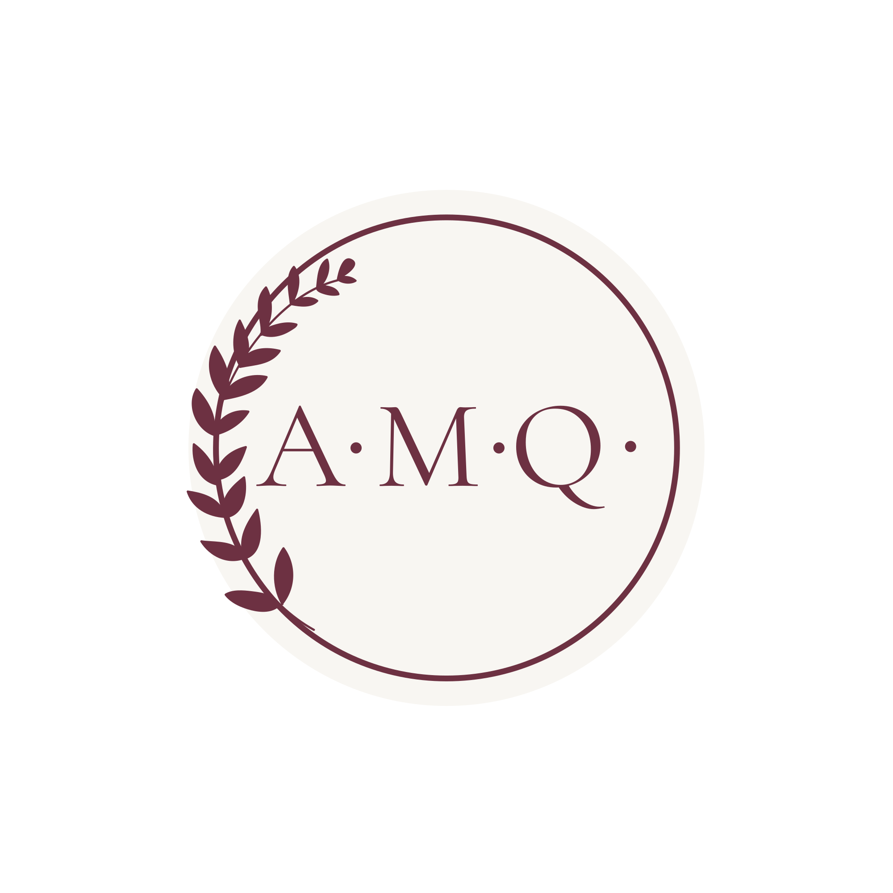
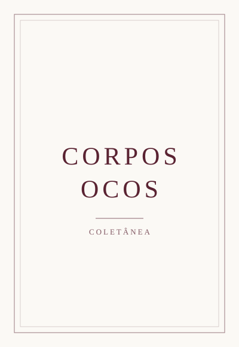
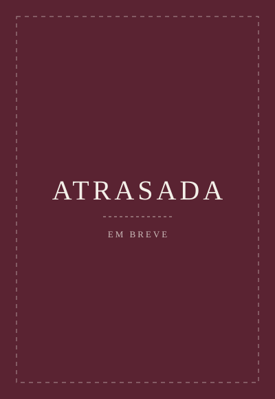

Escritora
Entrar na Biblioteca
Publicado na Coletânea 20 anos UFGD
2025
Publicado originalmente na Coletânea 20 anos UFGD
Ler no site original ↗
Vencedor do 2º Concurso Literário Revista Arredia - UFGD
2026
Divulgado no portal da UFGD
Ler no site original ↗Andressa Maria de Oliveira Queiroz nasceu e vive em Dourados (MS). Licenciada em Letras – Inglês pela Universidade Federal da Grande Dourados (UFGD), é professora da rede estadual de ensino de Mato Grosso do Sul e estudante do curso de Tecnólogo em Escrita Criativa da UFGD, o primeiro curso superior público da área no Brasil. Participa de projetos de extensão voltados à promoção da leitura e da escrita literária.
Sua produção literária explora o insólito e as inquietações do cotidiano, frequentemente abordando temas como saúde mental e o universo feminino. Publicou contos na Coletânea de Contistas Contemporâneos 2024, da Editora Persona, e na Coletânea de Textos Literários de Estudantes da UFGD, integrante da coleção comemorativa dos 20 anos da universidade.
Em 2025, venceu o 2º Concurso de Contos da Revista Arredia (UFGD) com o conto Atrasada. Em 2026, conquistou o 6º lugar no Concurso de Contos Ulysses Serra, promovido pela Academia Sul-Mato-Grossense de Letras, com o conto Elipse.